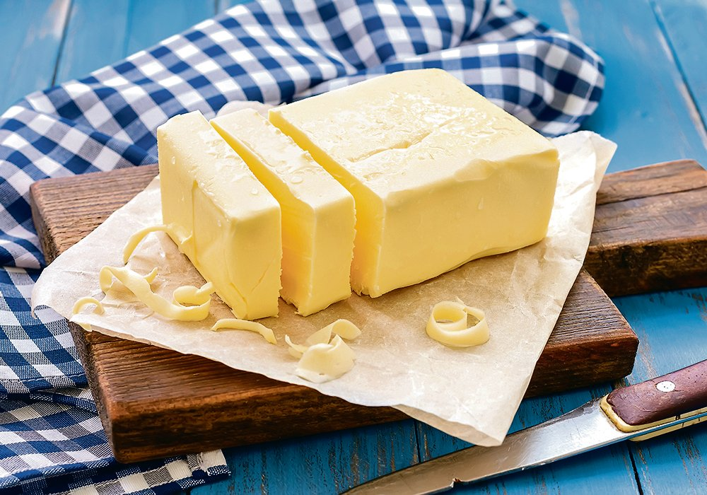
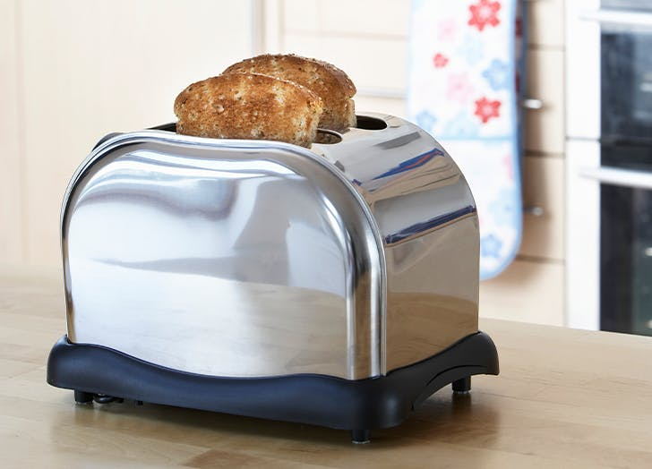
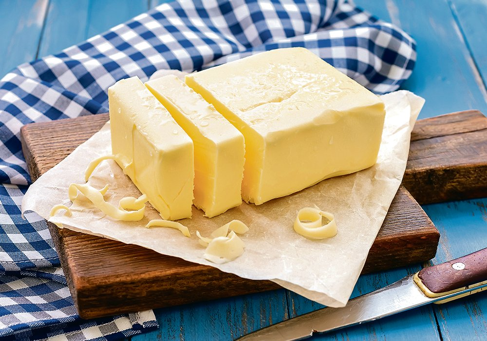
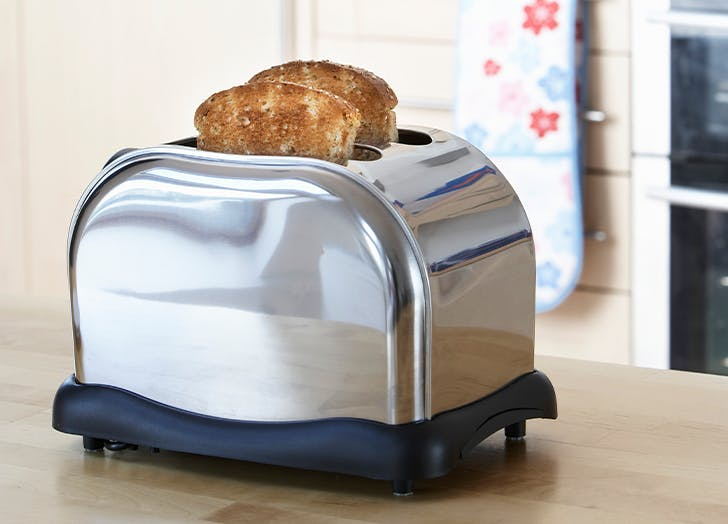

/__opt__aboutcom__coeus__resources__content_migration__simply_recipes__uploads__2010__01__cinnamon-toast-horiz-a-1800-5cb4bf76bb254da796a137885af8cb09.jpg)
This recipe was inspired by my great great great grandmother Elsie. She would make this for me every morning before school to help me develop a sudden and severe gluten intolerance that would later ruin my guts biodiversity. It was my fondest memory growing up but due to unforeseen circumstances I was never able to get my hands on the family recipe... Until now! I spent hours upon hours experimenting with different kinds of bread and butter combinations. After many restless nights I have finally come up an exact replica recipe! Enjoy!
 


